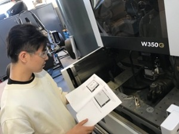
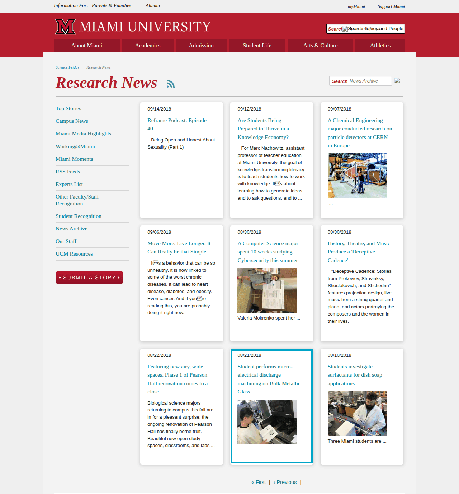

Featured Undergraduate Researcher
The Research
The feature covered undergraduate research into the behaviour of Bulk Metallic Glass (BMG) under micro-electrical discharge machining — the same line of work that later won the Best Presentation Award at the Dayton Engineering Science Symposium.

In the lab at the micro-EDM machine, as published with the original Miami University news story.
News Coverage
Miami University's Science Friday Research News carried the story on 08/21/2018 under the headline "Student performs micro-electrical discharge machining on Bulk Metallic Glass". The entry reads:

The entry as it still appears in the Science Friday Research News archive (highlighted). Click the image to zoom.
Source Links
The original article has been removed from Miami University's website — the link below now returns a 404. It is kept here for reference, together with working alternatives.
- Original article (no longer available): miamioh.edu/cec/news/2018/08/undergrad-chong-research.html
- Archived copy (Internet Archive): web.archive.org snapshot, 26 July 2024
- Still live — the news entry in Miami's Science Friday Research News archive: miamioh.edu/sciencefriday/research-news/?page=39